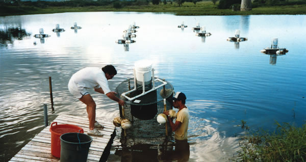

JAMES RAKOCY/ALTERNATIVE AQUACULTURE ASSOCIATION
This aquaculture system in St. Croix, U.S. Virgin Islands, yields several hundred pounds of red tilapia each year. These cages have demand feeders—the fish strike a rod that releases food pellets into the water.